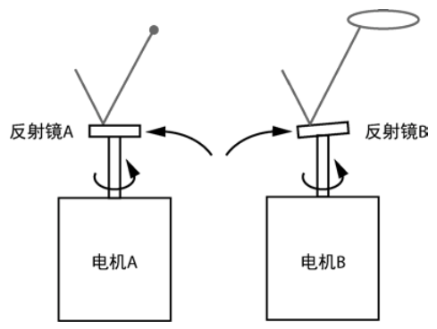
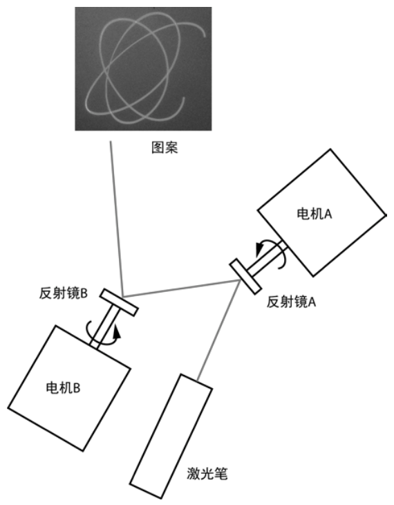
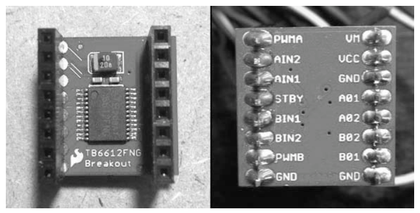
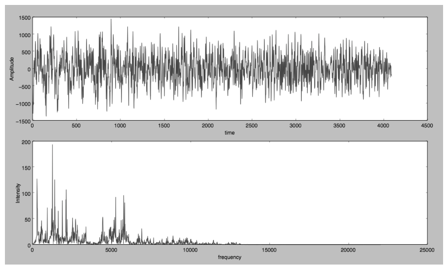
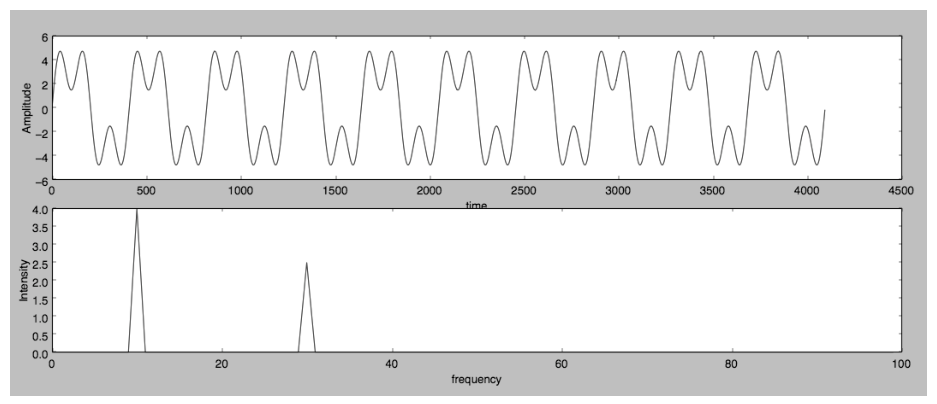
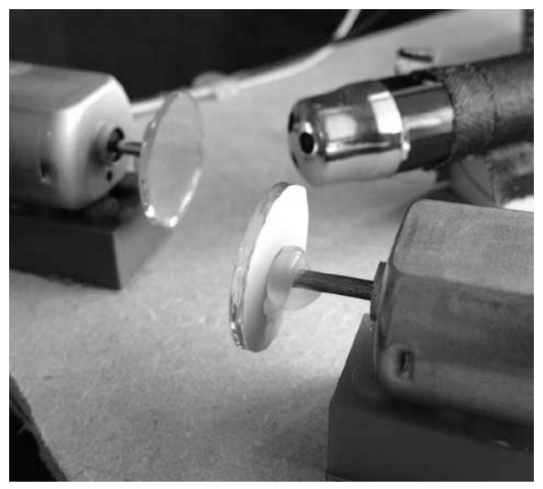
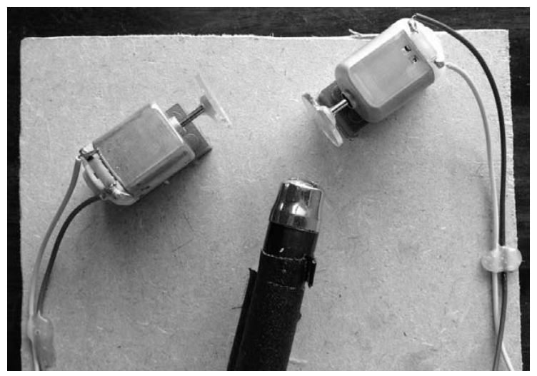
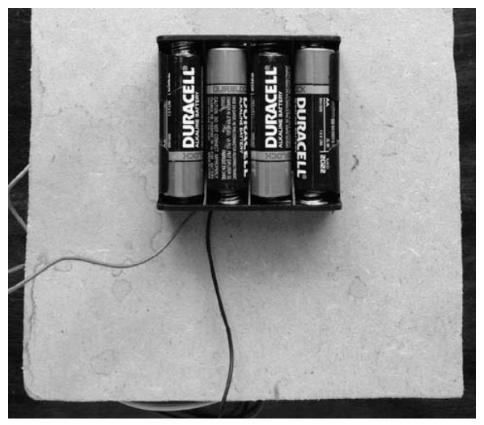
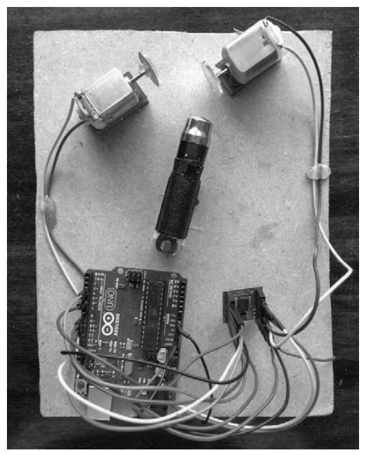
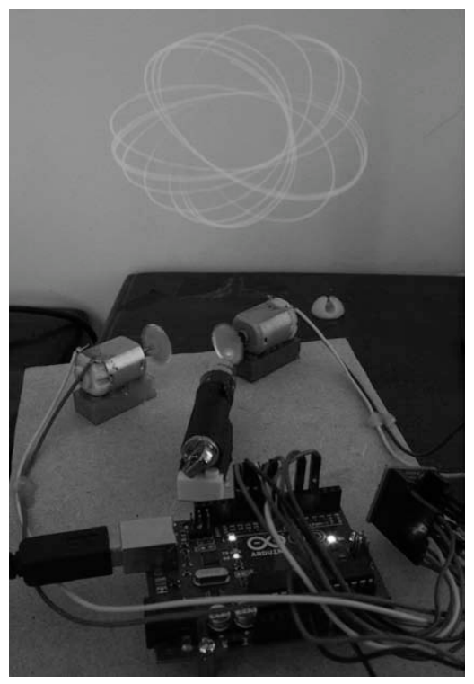

第 13 章 激光音乐秀#
本章解决：如何让激光图案跟着音乐起舞——用两台直流电机各带一面小镜子反射激光束产生图案；Python 对实时音频做快速傅里叶变换（FFT），把低、中、高三个频段的能量换算成两个电机的速度与方向，经串口发给 Arduino，由 TB6612FNG 电机驱动器执行。 承上启下：本章是第 12 章的直接续篇：Arduino 草图结构、
Serial.begin(9600)串口协议与 pySerial 通信全部复用，但数据方向反转——上次 Arduino 发数据、Python 收，这次 Python 发指令、Arduino 执行。算法上与第 4 章的音频项目一脉相承（乐器的音调就是多种频率的混合），这次用 numpy 的 FFT 把声音拆成频段；图案的数学则与第 2 章万花尺的内旋轮线遥相呼应。第 14 章换一块板子：用树莓派做天气监控器，为硬件篇收官。
本章 Python 承担更重的任务：除了处理串口通信之外，还要基于实时音频数据做计算，并利用结果调整激光显示设备中的电机。先把激光说清楚：将激光当作一束强烈的光束——即使通过很大距离投射，它仍保持聚焦在一个微小的点上。这种聚焦之所以可能，是因为光束被组织成光波只沿一个方向行进、且彼此同相。
项目的玩法：用一支便宜、容易获得的激光笔创建与音乐（或任何音频输入）同步的激光图案。硬件是激光笔加两个连接到直流电机的旋转镜；Arduino 设置电机的方向和旋转速度，Python 通过串口来控制——Python 程序读取音频输入、分析它、把它转换为电机速度和方向数据。本章将介绍的主题：
- 用激光和两个旋转镜产生有趣的图案；
- 用快速傅立叶变换从信号中获得频率信息；
- 用 numpy 计算快速傅里叶变换；
- 用 pyaudio 读取音频数据；
- 在计算机和 Arduino 之间设置串口通信；
- 用 Arduino 驱动电机。
13.0 本章导图#
13.1 用激光产生图案#
生成激光图案的思路：激光笔加两个镜子，分别连接到两个小型直流电机的轴上（图 13-1）。
- 平面镜 A：向平面镜（反射镜 A）表面照射激光，即使电机正在旋转，投影的反射也保持为一个点——因为镜面垂直于电机的旋转轴，镜子转起来就像根本没转一样。
- 倾斜镜 B：镜子与轴成一定角度连接时，轴旋转起来，投影点的轨迹是一个椭圆；电机旋转足够快时，观察者会感觉到移动的点是一个连续的形状（视觉暂留）。

拓展：为什么「够快」就能连成图形
人眼的视觉暂留大约在十几毫秒量级（电影每秒 24 帧就骗过了眼睛）。电机每秒转几十圈，光点每圈扫出同一个椭圆若干次，视网膜上残留的像互相叠加，看到的就是一条连续亮线而不是一个跳动的点。第 4 章的 Boids 动画靠 matplotlib 定时重绘"骗"眼睛，这里靠真实旋转，原理相同。
把两面镜子串起来：让从镜子 A 反射的光投影到镜子 B 上。电机 A 和电机 B 一起旋转时，反射点的图案是两个旋转运动的组合，产生出有趣的图案（图 13-2）。图案具体长什么样取决于两个电机的旋转速度和旋转方向——它们类似于第 2 章中万花尺产生的长短辐圆内旋轮线（hypotrochoid）。

拓展：第 2 章的重逢
第 2 章的万花尺用"小齿轮在大齿轮内部滚动 + 笔在偏心孔里"画出内旋轮线，本质是两个周期运动（公转与自转）的叠加。本章的两个旋转镜干的是同一件事：每面镜子让光点在某个方向上做周期性摆动，两级摆动正交叠加，轨迹同属"两个周期运动的合成"这一族——数学上与利萨如（Lissajous）图形也是近亲。所以本章是第 2 章参数方程的"物理实现版"：转动了的两面镜子就是活体的参数方程。
13.1.1 电机控制#
用 Arduino 控制电机的速度和方向。这种设置要小心：电机需要相对较高的电压和电流，Arduino 承受不了这么大的电流，直接驱动会损坏板卡。图 13-3 所示的 SparkFun TB6612FNG 外设"分线（breakout）"板可以保护 Arduino、简化设计并缩短开发时间——利用分线板可以从 Arduino 同时控制两个电机。

看图 13-3（b）的焊接背面，引脚分三类（A、B 分别表示两个电机）：
| 引脚 | 作用 |
|---|---|
| IN1 / IN2（如 AIN1、AIN2） | 控制对应电机的旋转方向 |
| 01 / 02（如 A01、A02） | 为电机供电的输出端 |
| PWM（如 PWMA、PWMB） | 控制对应电机的速度 |
| STBY | 待机控制（两个通道共用） |
| VCC / VM / GND | 逻辑电源 / 电机电源 / 地 |
通过写入这些引脚，就能控制每个电机的旋转方向和速度——这正是本项目需要的。
拓展：H 桥与 MOSFET
13.2.2 节作者说想知道板卡原理就"从了解 H 桥开始"。H 桥（H-bridge）因电路形状像字母 H 得名：电机跨在 H 的横杠上，四个开关（这里用金属氧化物半导体场效应晶体管，MOSFET）摆在四条腿上；对角线上两个开关同时导通，电流就从左向右流，换另一对导通则电流反向——这就是电机的正反转原理。再用 PWM 快速通断，就能调速度。TB6612FNG 内部集成了两路这样的 H 桥（名字里"1A 双通道"指每通道约 1.2 A 的持续电流）。电机是感性负载，通断瞬间会产生反冲电压——让专门的驱动芯片扛这些，正是它"保护 Arduino"的方式。
注意
可以用任何你熟悉的电机控制电路替换该分线板部分，只要适当地修改 Arduino 程序即可。
13.1.2 快速傅里叶变换#
项目的最终目标是基于音频输入控制电机速度，所以需要能够分析音频的频率。
回顾第 4 章：来自乐器的音调是多种频率或泛音的混合。事实上，任何声音都可以用傅里叶变换分解为成分频率。将傅里叶变换应用于数字信号时，结果称为离散傅里叶变换（Discrete Fourier Transform，DFT），因为数字信号由许多离散样本组成。本项目用 Python 实现快速傅里叶变换（Fast Fourier Transform，FFT）算法来计算 DFT（本章用 FFT 同时指代算法和结果）。
拓展：DFT 与 FFT 的关系
对 N 个样本 \(x_0,\dots,x_{N-1}\)，DFT 的定义是 \(X_k = \sum_{n=0}^{N-1} x_n\,e^{-2\pi i kn/N}\)——把信号与 N 个不同频率的复指数"比对"，得到每个频率的强度和相位。直接按定义算要 \(O(N^2)\) 次运算；FFT 用分治法利用旋转因子的对称性，把复杂度降到 \(O(N\log N)\)。numpy 的 fft.rfft 还额外利用"实数输入的频谱左右对称"这一点，只算一半频率，更快。这也是为什么 FFT 对 2 的幂长度的信号优化最好。
先看一个简单的 FFT 示例。下面这个波是两个正弦波相加：
第一个波里的 4 是振幅、10 是频率（Hz）；第二个波振幅 2.5、频率 30。FFT 揭示了波的分量频率及其相对振幅：峰值出现在 10 Hz 和 30 Hz，第一个峰值的强度约为第二个的 1.6 倍（书里说"约两倍"，按 4/2.5 算是 1.6 倍）。
原书图文错位：正文与两幅插图对调
原书正文说"图 13-4 展示了一个只包含两个正弦波的信号""图 13-5 展示了更复杂的音频信号"，但书页上实际印的内容相反：图 13-4 是从音乐中录制的音频信号及多峰 FFT，图 13-5 才是上述两个正弦波叠加信号及其 10/30 Hz 双峰 FFT。阅读时以图的实际内容为准（本笔记的图注按图上内容写）。


音频输入（信号）处在时域（time domain）中，因为振幅数据随时间变化；FFT 处在频域（frequency domain）中。图 13-5 下半部分显示的一系列峰值，就是信号中各种频率的强度。
要计算 FFT，需要一组样本。样本数的选择是权衡：
| 样本数 | 太小 | 太大 |
|---|---|---|
| 频率图景 | 不能给出信号频率特征的良好图景 | 让信号的变化平均化 |
| 计算量 | 每秒要算更多次 FFT，反而更大 | —— |
| 实时性 | —— | 得不到信号的"实时"频率响应 |
对本项目采用的 44100 Hz 采样率，2048 的样本大小表示约 0.046 秒的数据（2048 / 44100 ≈ 0.0464）。
拿到频谱后怎么驱动电机？把频率范围（Hz）分成 3 个频段：[0, 100]、[100, 1000] 和 [1000, 2500]，计算每个频段的平均振幅，每个值以不同方式影响电机和激光图案：
- 低频平均振幅的变化将影响第一个电机的速度；
- 中频平均振幅的变化将影响第二个电机的速度；
- 高频峰值高于某个阈值时，第一个电机将改变方向。
挑低频和中频有实际含义：0–100 Hz 的低音频段大致对应歌曲中的节拍（鼓点），100–1000 Hz 的中音频段大致对应人声——节拍带转速、人声带转数的图案自然跟着音乐"呼吸"。
13.2 所需模块#
构建此项目所需物品的清单：
| 器材 | 用途 / 规格 |
|---|---|
| 小激光笔 | 图案光源 |
| 直流电动机 ×2 | 玩具用小电机即可，额定 9V |
| 小镜子 ×2 | 直径约 2.54 cm 或更小 |
| SparkFun 电机驱动器 1A 双通道 TB6612FNG | 保护 Arduino、驱动两台电机 |
| Arduino Uno 或类似板卡 | 收指令、控制驱动器 |
| 连接电线 | 单芯连接线，两端公插针好用 |
| 四节 AA 电池组 | 电机电源 |
| 乐高模块 | 垫高电机和激光笔，让镜子能自由旋转（书中用了 3 块一样的） |
| 矩形纸板或丙烯酸树脂板 | 约 20.3 cm × 15.2 cm，安装硬件 |
| 热胶枪 | 粘接固定 |
| 烙铁 | 给电机端子焊引线 |
13.2.1 搭建激光秀#
给电机装镜子。 反射镜必须与电机轴成一个小角度。安装方法：将镜子面朝下放在平坦表面上，在中心滴一滴热胶；小心地将电机轴浸入胶水中，与镜面保持垂直，扶住不动直到胶水硬化（图 13-6）。

提示：小角度从哪来
图 13-6 的标题写的是"以微小角度"连接，操作要点是"轴浸进胶滴时大致垂直"。胶滴有厚度，凝固后多少会给镜子留下一个小小的随机倾角——这正是需要的：倾角接近 0 时镜子转起来反射点几乎不动（退化成镜子 A），倾角太大椭圆会扫得过大。验收标准以书里的测试为准：用手旋转镜子、同时用激光笔照射，反射激光点在平面上的移动轨迹应是一个椭圆。对第二面镜子同样操作。
对准镜子。 将激光笔与反射镜对准，使激光从反射镜 A 反射到 B（图 13-7）。两件事要确保：
- 在反射镜 A 的整个旋转范围内，来自 A 的反射激光保持在反射镜 B 的圆周内——这需要一些尝试，可能会犯些错；测试办法是手动旋转反射镜 A。
- 在两个反射镜的旋转范围内，反射镜 B 的位置能让它反射的光落在一个平面上（如墙上）。

注意
调整时需要保持激光笔打开。如果激光笔有一个开启按钮，请用胶带让它保持打开（或者参见 13.8 节，了解更优雅的控制激光笔电源的方法）。
拓展：激光安全
调整期间激光一直开着，要养成两个习惯：光束和镜面反射的光斑都不要直视或射入他人眼睛（激光笔即使功率小于 1 mW，直射视网膜也有伤害）；对准时让光斑落在墙面或纸板上再观察。这也是后面用继电器/光隔离器远程控激光（13.8 节）的实际价值之一——人可以离光路远一点。
固定到安装板。 对镜子的位置满意后，将激光笔和两个带有镜子的电机用热熔胶粘到 3 个一样的乐高模块上，把它们升起，让镜子能够自由旋转；再把模块放在安装板上，摆放满意后用铅笔描出边缘、标记每个模块的位置，然后将模块粘在板上。
为电机供电。 电机一般不带引线，把电线焊接到两个端子上，留出足够长度（如 15 cm）以便连接电机驱动板卡。电机由电池组中的四节 AA 电池供电，用热熔胶将电池组粘在安装板背面（图 13-8）。

现在用手旋转两个镜子、同时用激光照射它们——如果转得够快，应该已经能看到一些有趣的图案，提前窥见结果的样子！
13.2.2 连接电机驱动器#
本项目用 Arduino 通过 SparkFun 电机驱动器（TB6612FNG）来控制电机。作者不详细展开板卡工作原理，但如果你好奇，可以从了解"H 桥"开始——一种常见的电路设计，用"金属氧化物半导体场效应晶体管（MOSFET）"来控制电机（见 13.1.1 节的拓展）。
现在把电机连接到 SparkFun 电机驱动器和 Arduino。电线不少，如表 13-1 所示。一个电机标记为 A，另一个为 B，接线时遵守这个惯例。
表 13-1 SparkFun 电机驱动器到 Arduino 的接线
| 从 | 至 | 这根线管什么 |
|---|---|---|
| Arduino 数字引脚 12 | TB6612FNG BIN2 | 电机 B 方向 |
| Arduino 数字引脚 11 | TB6612FNG BIN1 | 电机 B 方向 |
| Arduino 数字引脚 10 | TB6612FNG STBY | 待机控制（两通道共用） |
| Arduino 数字引脚 9 | TB6612FNG AIN1 | 电机 A 方向 |
| Arduino 数字引脚 8 | TB6612FNG AIN2 | 电机 A 方向 |
| Arduino 数字引脚 5 | TB6612FNG PWMB | 电机 B 速度（PWM） |
| Arduino 数字引脚 3 | TB6612FNG PWMA | 电机 A 速度（PWM） |
| Arduino 5V | TB6612FNG VCC | 驱动器逻辑电源 |
| Arduino GND | TB6612FNG GND | 共地 |
| Arduino GND | 电池组 GND（–） | Arduino 与电池组共地 |
| 电池组 VCC（+） | TB6612FNG VM | 电机电源（四节 AA） |
| 电机 #1 连接头 1（极性无所谓） | TB6612FNG A01 | 电机 A |
| 电机 #1 连接头 2（极性无所谓） | TB6612FNG A02 | 电机 A |
| 电机 #2 连接头 1（极性无所谓） | TB6612FNG B01 | 电机 B |
| 电机 #2 连接头 2（极性无所谓） | TB6612FNG B02 | 电机 B |
| Arduino USB 连接头 | 计算机的 USB 口 | 上传代码 + 串口通信 |
图 13-9 展示了所有接线。

13.3 Arduino 程序#
程序开始时设置 Arduino 的数字输出引脚；然后在主循环中，从串口读入数据，并把数据转换成发送给电机驱动器板卡的参数。下面还会讲清电机速度和方向控制的实现。
13.3.1 配置 Arduino 数字输出引脚#
首先按表 13-1 把 Arduino 数字引脚映射到电机驱动器上的引脚，并把引脚设置为输出：
// ===== 书 13.3.1 节：引脚映射与 setup() =====
// motor A connected to A01 and A02 // 电机 A 接驱动器 A01/A02
// motor B connected to B01 and B02 // 电机 B 接驱动器 B01/B02
int STBY = 10; // standby 待机
// Motor A
int PWMA = 3; // speed control 速度控制
int AIN1 = 9; // direction 方向
int AIN2 = 8; // direction 方向
// Motor B
int PWMB = 5; // speed control 速度控制
int BIN1 = 11; // direction 方向
int BIN2 = 12; // direction 方向
void setup(){
pinMode(STBY, OUTPUT); // 7 个数字引脚全部设为输出
pinMode(PWMA, OUTPUT);
pinMode(AIN1, OUTPUT);
pinMode(AIN2, OUTPUT);
pinMode(PWMB, OUTPUT);
pinMode(BIN1, OUTPUT);
pinMode(BIN2, OUTPUT);
// initialize serial communication
Serial.begin(9600); // 启动串口通信，波特率 9600（同第 12 章）
}
前面的引脚映射把 Arduino 引脚名对应到电机驱动器引脚。例如 PWMA（脉冲调制 A）控制电机 A 的速度，分配给 Arduino 引脚 3。PWM（脉冲宽度调制）是为设备供电的一种方式：发送快速打开和关闭的数字脉冲，让器件"看到"连续的电压。数字脉冲接通的时间占比称为占空比（duty cycle），以百分比表示——更改这个百分比，就改变了给设备的功率水平。PWM 通常用于控制可调光 LED 和电机速度。
拓展：占空比的直观账
占空比 50% 意味着一半时间通电：电机线圈是感性的，电流来不及跟随脉冲跌落，实际"感受"到的是平均电压（约满压的一半），转速随之下降。Arduino Uno 上 analogWrite() 的 PWM 频率约 490 Hz（部分引脚约 976 Hz），对玩具电机来说足够平滑。这个"开关式调功"思路与第 2 章"改变参数画不同曲线"一样：不用连续地调电压，调占空比就够了。
setup() 方法把所有 7 个数字引脚设置为输出，然后 Serial.begin(9600) 启动串口通信——Arduino 在这里读取计算机发来的串行数据。
13.3.2 主循环#
主循环等待串行数据到达，解析它以提取电机速度和方向，并用这些信息设置驱动板的数字输出。电机控制数据以 5 个字节为一组发送：头字节 'H' 后跟 4 个单字节数字 s1、d1、s2、d2，表示电机的速度和方向。
// ===== 书 13.3.2 节：主循环（读取 laser.py 发来的电机数据）=====
// main loop that reads the motor data sent by laser.py
void loop()
{
// data sent is of the form 'H' (header), speed1, dir1, speed2, dir2
if (Serial.available() >= 5) { // ① 攒够 5 个字节才处理
if(Serial.read() == 'H') { // ② 校验头字节，确认一组数据的起点
// read the next 4 bytes
byte s1 = Serial.read(); // ③ 依次读 4 字节：电机 1 速度/方向、电机 2 速度/方向
byte d1 = Serial.read();
byte s2 = Serial.read();
byte d2 = Serial.read();
// stop the motor if both speeds are 0
if(s1 == 0 && s2 == 0) { // ④ 两个速度都是 0 → 停机
stop();
}
else {
// set the motors' speed and direction
move(0, s1, d1); // ⑤ 第一对值交给 move()，电机编号 0
move(1, s2, d2); // 第二对值交给 move()，电机编号 1
}
// slight pause for 20 ms
delay(20); // ⑥ 小停 20 ms，别读得太快
}
else {
// if there is invalid data, stop the motors
stop(); // ⑦ 头字节不是 'H'：数据可能已损坏 → 停机
}
}
else {
// if there is no data, pause for 250 ms
delay(250); // ⑧ 没有数据 → 等 250 ms 再试
}
}
串行数据是连续流入的，所以①行先检查已收到至少 5 个字节才动手；不够就延迟 250 毫秒（⑧行），在下一个周期再读。②行检查读入的第一个字节是不是 'H'，确保接下来 4 个字节是一组正确控制数据的开头；如果不是，就在⑦行停止电机——数据可能因传输或连接错误而损坏。③行开始读取两个电机的速度和方向；两个速度都为零就走④行停机，否则⑤行用 move() 把速度和方向值分配给电机。⑥行的 20 毫秒小延迟让电机能跟上，避免读入过快。
拓展：头字节 'H' 是同步锚点
串口是没有帧结构的字节流：如果程序启动时正好从一组数据的中间开始读，s1/d1/s2/d2 就会全部错位，而且一错到底。每包都从头字节 'H' 开始，等于给了 Arduino 一个重新对齐的机会——对不上就宁可不动作（stop）。这种"头字节 + 定长包"是最朴素的串口协议设计，比第 12 章"发什么读什么"的裸文本协议多了一层容错。
下面是用于设置电机速度和方向的 move() 方法：
// ===== 书 13.3.2 节：move()——设置电机速度与方向 =====
// set motor speed and direction
// motor: A -> 1, B -> 0 电机编号：A 对应 1，B 对应 0
// direction: 1/0
void move(int motor, int speed, int direction)
{
// disable standby
digitalWrite(STBY, HIGH); // ① 写 HIGH 退出待机模式
boolean inPin1 = LOW; // ② 默认方向电平：inPin1=LOW, inPin2=HIGH
boolean inPin2 = HIGH;
if(direction == 1){ // ③ direction 为 1 时翻转两个电平 → 换向
inPin1 = HIGH;
inPin2 = LOW;
}
if(motor == 1){ // ④ 编号 1 → 驱动器 A 通道
digitalWrite(AIN1, inPin1); // AIN1/AIN2 一高一低决定电流方向
digitalWrite(AIN2, inPin2);
analogWrite(PWMA, speed); // PWMA 输出 PWM，speed 取值 [0,255]
}
else{ // ⑤ 编号 0 → 驱动器 B 通道
digitalWrite(BIN1, inPin1);
digitalWrite(BIN2, inPin2);
analogWrite(PWMB, speed);
}
}
电机驱动器具有待机模式，在电机关闭时节省电力。①行向待机引脚写入 HIGH，退出待机。②行定义两个布尔变量确定电机的旋转方向；③行在 direction 参数为 1 时翻转它们的值，从而在下面的代码里切换电机方向。④行处理电机 A：AIN1、AIN2 控制方向，用 digitalWrite() 把一个引脚置 HIGH（1）、另一个置 LOW（0）；PWMA 上发送 PWM 信号控制速度——analogWrite() 可以把 [0, 255] 范围内的值写入 Arduino 输出引脚（相比之下 digitalWrite() 只允许写 1 或 0）。⑤行用同样方式处理电机 B。
13.3.3 停止电机#
要停止电机，把 LOW 写入电机驱动器的待机引脚，让两个通道一起断电：
// ===== 书 13.3.3 节：stop()——回到待机 =====
void stop(){
// enable standby
digitalWrite(STBY, LOW); // 写 LOW 进入待机，电机断电
}
13.4 Python 代码#
现在看计算机上运行的 Python 代码。这段代码完成繁重的工作：读入音频、计算 FFT、发送串行数据到 Arduino。完整的项目代码见 13.5 节。
Python 3 适配：本章不实跑
本章是硬件章：需要激光笔、电机与驱动板实物，且本笔记的 Anaconda 环境未装 pyaudio 和 pyserial（import pyaudio / import serial 都会报 ModuleNotFoundError），代码按原书呈现、未实跑。要跑起来先 pip install pyaudio pyserial（Windows 上 pyaudio 常需要预编译 wheel）。
13.4.1 选择音频设备#
先用 pyaudio 模块读入音频数据。初始化 pyaudio：
pyaudio 提供了访问计算机音频输入设备的辅助函数。getInputDevice() 列出所有设备并让用户选择：
# ===== 书 13.4.1 节：选择 pyaudio 输入设备 =====
# get pyaudio input device
def getInputDevice(p):
index = None # ① 返回值；None 表示没找到合适的输入设备
nDevices = p.get_device_count() # ② 音频设备总数
print('Found %d devices. Select input device:' % nDevices)
# print all devices found
for i in range(nDevices): # ③ 遍历所有设备
deviceInfo = p.get_device_info_by_index(i) # ④ 每个设备的特征信息字典
devName = deviceInfo['name'] # ⑤ 只取设备名称
print("%d: %s" % (i, devName)) # ⑥ 打印"索引: 名称"
# get user selection
try:
# convert to integer
index = int(input()) # ⑦ 读入用户选择并转成整数
except:
pass
# print the name of the chosen device
if index is not None:
devName = p.get_device_info_by_index(index)["name"]
print("Input device chosen: %s" % devName)
return index # ⑧ 返回选中的索引
①行把 index 设为 None——它是⑧行的返回值，返回 None 就意味着找不到合适的输入设备。②行用 get_device_count() 获取计算机上音频设备的数量，包括麦克风、线路输入或线路输出等所有音频硬件；然后遍历每个设备：④行的 get_device_info_by_index() 返回包含设备各种特征信息的字典，这里只关心名称，⑥行打印索引和名称。⑦行用 input() 读入用户的选择并转换成整数索引，⑧行返回它。
13.4.2 从输入设备读取数据#
选好输入设备后要从它读数据。先打开音频流——开流本身只做一次，打开之后读数据、算 FFT 的代码才放进 while 循环里连续执行：
# ===== 书 13.4.2 节：打开音频输入流 =====
# set FFT sample length
fftLen = 2**11 # ① FFT 缓冲长度：2048 个样本（2 的幂，FFT 对此优化）
# set sample rate
sampleRate = 44100 # ② 44.1 kHz，CD 质量录音的标准
print('opening stream...')
stream = p.open(format = pyaudio.paInt16, # ③ 16 位整数 PCM
channels = 1, # 单声道读取
rate = sampleRate, # 采样率 44100 Hz
input = True, # 输入流
frames_per_buffer = fftLen, # 每缓冲帧数 = FFT 长度
input_device_index = inputIndex) # ④ 用 getInputDevice() 选的设备
①行把 FFT 缓冲区的长度（用于计算 FFT 的音频采样数）设为 2048，即 \(2^{11}\)——FFT 算法针对 2 的幂做了优化。②行把 pyaudio 的采样率设为 44100（44.1 kHz），CD 质量录音的标准。随后打开 pyaudio 流，选项逐个对应：pyaudio.paInt16 表示按 16 位整数读取数据；channels=1 把音频当作单个声道读取；rate 是采样速率；input=True 声明这是输入流；frames_per_buffer 设为 FFT 缓冲区长度；input_device_index 用 getInputDevice() 选中的设备。
原书笔误：'是211'
原书正文把 \(2^{11}\) 印成了"是211"（上标丢失）。结合代码 fftLen = 2**11 与"FFT 算法针对 2 的幂进行了优化"一句，应读作"是 \(2^{11}\)，即 2048"。
拓展：为什么是 44100
44.1 kHz 是 CD 的标准采样率：人耳上限约 20 kHz，按奈奎斯特采样定理，采样率至少要是信号最高频率的 2 倍，44100 > 2 × 20000 留有余量。对应地，44100 Hz 采样率的信号最高可表达 22050 Hz（奈奎斯特频率）——这个数字在后面分析 FFT 频段时会再次出现。
13.4.3 计算数据流的 FFT#
从流中读数据并算 FFT（循环体）：
# ===== 书 13.4.3 节：读数据并计算 FFT =====
# read a chunk of data
data = stream.read(fftLen) # ① 读最近的 fftLen 个样本（bytes）
# convert the data to a numpy array
dataArray = numpy.frombuffer(data, dtype=numpy.int16) # ② 转成 16 位整数 numpy 数组
# get FFT of data
fftVals = numpy.fft.rfft(dataArray)*2.0/fftLen # ③ rfft 计算实数信号的 FFT，再归一化
# get absolute values of complex numbers
fftVals = numpy.abs(fftVals) # ④ 复数取模 → 实数幅度谱
①行从音频输入流读取最近的 fftLen 个样本（原始 bytes）；②行用 numpy.frombuffer 把它转成 16 位整数 numpy 数组。③行用 numpy fft 模块的 rfft() 计算这些值的 FFT——该方法接受由"实数"（如音频数据）组成的信号并计算 FFT，结果通常是一组复数；*2.0/fftLen 是归一化因子，把 FFT 值映射到希望的范围。④行因为 rfft() 返回复数，用 numpy 的 abs() 取这些复数的大小（模），得到实数。
拓展：2.0/fftLen 各管一半
DFT 定义自带一个 \(1/N\) 因子，所以 /fftLen 把幅值还原到样本幅度量级；*2.0 是因为实数信号的频谱左右对称、rfft 只保留了非负频率的一半，能量要乘 2 才与双边谱一致。abs() 对复数 \(a+bi\) 算 \(\sqrt{a^2+b^2}\)，即该频率成分的幅度。三步合起来：fftVals[k] ≈ 数组中频率为 \(k \cdot f_s/N\) 的成分的振幅。
13.4.4 从 FFT 值提取频率信息#
接下来从 FFT 值中提取相关的频率信息：
# ===== 书 13.4.4 节：三个频段的平均振幅 =====
# average 3 frequency bands: 0-100 Hz, 100-1000 Hz, and 1000-2500 Hz
levels = [numpy.sum(fftVals[0:100])/100, # 低频段：求和再除以 bin 数 → 平均
numpy.sum(fftVals[100:1000])/900, # 中频段
numpy.sum(fftVals[1000:2500])/1500] # 高频段
为了分析音频信号，频率范围分为 3 个频段：0 至 100 Hz、100 至 1000 Hz、1000 至 2500 Hz（书注释口径）。最感兴趣的是低音频段（0–100 Hz）和中音频段（100–1000 Hz），分别大致对应歌曲中的节拍和人声。对每个范围用 numpy.sum() 计算平均 FFT 值，存进 levels 列表。
注意：注释里的 Hz 频段与 FFT 下标并不一一对应
rfft 对 2048 个样本输出 \(2048/2+1=1025\) 个 bin，覆盖 0 Hz 到奈奎斯特频率 22050 Hz，每个 bin 宽 \(44100/2048 \approx 21.5\) Hz。因此 fftVals[0:100] 实际覆盖约 0–2.1 kHz（当然包含节拍所在的低频），fftVals[100:1000] 约为 2.1–21.5 kHz；而 fftVals[1000:2500] 已超出 1025 个 bin 的范围，numpy 切片自动截断后只剩第 1000–1024 号 bin（约 21.5–22.05 kHz、贴近奈奎斯特的部分），除以 1500 后数值通常极小。作者的方法实质是"按下标位置粗分低/中/高三段、系数靠试错调出"。想按真实 Hz 精确分频段，可以用 numpy.fft.rfftfreq(fftLen, 1.0/sampleRate) 生成每个 bin 对应的频率，再用布尔掩码取段——这也正是 13.8 实验 1 的改造方向之一。
13.4.5 将频率转换为电机速度和方向#
现在把频率信息转换为电机速度和方向：
# ===== 书 13.4.5 节：频率信息 → 电机速度与方向 =====
# 'H' (header), speed1, dir1, speed2, dir2
vals = [ord('H'), 100, 1, 100, 1] # ① 5 字节控制字模板；ord('H') 把字符转成整数
# speed1
vals[1] = int(5*levels[0]) % 255 # ② 低频段均值 ×5 → 电机 1 速度，%255 限幅
# speed2
vals[3] = int(100 + levels[1]) % 255 # ③ 中频段均值 +100 → 电机 2 速度，%255 限幅
# dir
d1 = 0
if levels[2] > 0.1: # ④ 高频段超过阈值 0.1 → 电机 1 方向翻转为 1
d1 = 1
vals[2] = d1
vals[4] = 0 # ⑤ 电机 2 的方向恒为 0
①行初始化要发送给 Arduino 的电机速度和方向值列表（5 个字节，从 'H' 开始），用内置 ord() 函数把字符串转成整数。②行取最低频率范围的值，放大 5 倍、转成整数，用取模运算符（%）确保落在 [0, 255] 内——该值控制第一个电机的速度。③行把中间频率值加上 100 后限幅——该值控制第二个电机的速度。④行只要最高频率范围的值超过阈值 0.1，就把方向位翻转为 1；⑤行第二个电机的方向保持为 0。
注意（作者原话）：转换规则是自由发挥
"这部分确实是自由发挥：没有特别优雅的规则来管理这些转换。这些值随着音频信号而不断变化，你提出的任何方法都可以改变电机速度，并随音乐一起影响激光模式。只需确保转换将电机速度设置在 [0,255] 范围内，并且方向总是设置为 1 或 0。我选择的方法只是基于试验和错误，我在播放各种类型的音乐时观察 FFT 值。"——通过尝试和错误，作者发现这些方法产生很好的图案变化，但他建议你改变这些值、创建自己的转换：这里没有错误的答案。
勘误：'电机 A/电机 B'与代码路径对不上
按 Arduino 代码的实际路径走一遍：move() 的注释是 A→1、B→0，主循环调用 move(0, s1, d1)、move(1, s2, d2)——所以串口数据的第一对值（s1/d1，低频速度 + 高频阈值翻转的方向）落到电机 B，第二对值（s2/d2，中频速度 + 恒为 0 的方向）落到电机 A。而正文说"高频超过阈值就切换电机 A 方向、电机 B 方向保持为 0"，与代码正好相反。好在两台电机完全对称，哪个名字对应哪台不影响图案效果；但如果想让"高频翻转"发生在特定一台镜子上，接线时以代码路径为准。
13.4.6 测试电机设置#
用实时音频流测试硬件之前，先检查电机设置。autoTest() 就是干这个的：
# ===== 书 13.4.6 节：autoTest——电机自动扫描 =====
# automatic test for sending motor speeds
def autoTest(ser):
print('starting automatic test...')
try:
while True:
# for each direction combination
for dr in [(0, 0), (1, 0), (0, 1), (1, 1)]: # ① 4 组方向组合
# for a range of speeds
for j in range(25, 180, 10): # ② 电机 2 速度扫描
for i in range(25, 180, 10): # ③ 电机 1 速度扫描
vals = [ord('H'), i, dr[0], j, dr[1]] # ④ 5 字节控制字
print(vals[1:]) # ⑤ 打印速度/方向（切片去掉头字节）
data = struct.pack('BBBBB', *vals) # ⑥ 打包成 5 个无符号字节
ser.write(data) # ⑦ 写串口
sleep(0.1) # 每组停留 0.1 秒
except KeyboardInterrupt:
print('exiting...')
# shut off motors
vals = [ord('H'), 0, 1, 0, 1] # ⑧ Ctrl-C 清理：速度置 0 → Arduino 停机
data = struct.pack('BBBBB', *vals)
ser.write(data)
ser.close() # ⑨ 关闭串口
该方法通过改变每个电机的速度和方向，让两个电机在一定范围内运动。每个电机的方向可以是顺时针或逆时针，所以①行的外层循环表示 4 种组合；对每种组合，②③行的循环以不同速度运转电机。
注意
作者使用范围 (25, 180, 10)——速度从 25 变到 180、步长为 10（严格说 range 不含终点，实际止于 175）。没有用电机的完整运动范围 [0, 255]，因为电机很少转速低于 25，而 200 以上的转速真的很快。
④行生成 5 字节的电机数据值，⑤行打印它们（vals[1:] 切片取除第一个元素外的全部）。⑥行用 struct.pack('BBBBB', *vals) 把电机数据打包成字节数组——B 对应一个无符号字节（0–255），* 把列表展开成 5 个参数；⑦行写入串口。按 Ctrl-C 中断测试，⑧⑨行的异常处理负责清理：停电机并关闭串口——像你这样负责的程序员都会这么做。
13.4.7 命令行选项#
与以前的项目一样，用 argparse 模块解析命令行参数。串口名是必需选项，另有自动测试和手动测试两个开关（要点如下，完整清单见原书 13.5 节）：
# ===== 书 13.4.7 节：argparse 与 main() 分发（节选） =====
parser = argparse.ArgumentParser(description='Analyzes audio input and '
'sends motor control information via serial port')
parser.add_argument('--port', dest='serial_port_name', required=True) # 串口名，必选
parser.add_argument('--mtest', action='store_true', default=False) # 手动测试开关
parser.add_argument('--atest', action='store_true', default=False) # 自动测试开关
args = parser.parse_args()
# ……随后按开关分发：
ser = serial.Serial(strPort, 9600) # pySerial 打开串口，波特率 9600 位/秒
if args.mtest:
manualTest(ser)
elif args.atest:
autoTest(ser)
else:
fftLive(ser) # 默认：实时音频 + FFT
| 选项 | 作用 | 默认 |
|---|---|---|
| --port | 串口名（Arduino IDE 的 Tools ▸ Serial Port 下找；Windows 形如 COM3） | 无（required=True） |
| --mtest | 手动测试模式（输入方向和速度） | False |
| --atest | 自动测试模式（扫描速度与方向） | False |
serial.Serial(strPort, 9600) 用 pySerial 按传入的字符串打开串口，波特率 9600 位/秒（与 Arduino 端的 Serial.begin(9600) 配对）。不带 --mtest/--atest 时进入 fftLive()——音频处理和 FFT 计算都封装在里面。
13.4.8 手动测试#
手动测试让你输入特定的电机方向和速度，直接看它们对激光图案的影响：
# ===== 书 13.4.8 节：manualTest——手动测试（Python 3 改 input()） =====
# manual test of motor direction and speeds
def manualTest(ser):
print('starting manual test...')
try:
while True:
print('enter motor control info such as < 100 1 120 0 >')
strIn = input() # ① 原书 raw_input()；Python 3 改用 input()
vals = [int(val) for val in strIn.split()[:4]] # ② 按空格切分、取前 4 个、转整数
vals.insert(0, ord('H')) # ③ 头部插入 'H' 凑足 5 字节
data = struct.pack('BBBBB', *vals) # ④ 打包
ser.write(data) # ⑤ 发送
except:
print('exiting...')
# shut off the motors
vals = [ord('H'), 0, 1, 0, 1] # ⑥ 任何异常（含 Ctrl-C）→ 清理停机
data = struct.pack('BBBBB', *vals)
ser.write(data)
ser.close()
①行等待用户在命令提示符下输入值，预期形式如 100 1 120 0——四个数依次是第一对电机的速度、方向和第二对电机的速度、方向（书里写作"电机 A 的速度和方向，然后是电机 B 的"，按 13.4.5 的勘误，第一对值实际落在电机 B）。②行把字符串解析为整数列表，③行在头部插入 'H' 构成完整电机数据，④⑤行打包并按预期格式经串口发送。用户用 Ctrl-C 中断（或发生任何异常）时，⑥行完成清理：正常关闭电机和串口。
Python 3 适配：raw_input() 已不存在
原书 13.4.8 与完整代码里的 raw_input() 是 Python 2 残留，Python 3 下直接 NameError——改成 input() 即可（有趣的是同一章 13.4.1 的 getInputDevice() 里作者用的已经是 input()，只有这里漏改）。本章其余 print 均已是函数式写法，无需调整。另外注意这里的裸 except: 也会捕获输入解析错误：输错格式（如字母）不会重新提示，而是触发清理直接退出测试。
13.5 完整的 Python 代码#
完整程序 laser.py 的组装顺序：import（sys、serial、struct、pyaudio、numpy、math、time.sleep、argparse）→ manualTest()（13.4.8）→ autoTest()（13.4.6）→ getInputDevice()（13.4.1）→ fftLive()（13.4.2–13.4.5 的碎片按序拼进 while 循环）→ main()（argparse + 分发）→ if __name__ == '__main__' 调用 main()。完整代码也可以从 GitHub 下载：https://github.com/electronut/pp/tree/master/arduino-laser/laser.py 。
13.4 节拆开讲的循环体拼起来后，fftLive() 只剩 try/except/finally 的收尾结构没展示：
# ===== 书 13.5 节：fftLive() 的骨架与退出清理（循环体见 13.4.3–13.4.5） =====
def fftLive(ser):
p = pyaudio.PyAudio() # 初始化 pyaudio
inputIndex = getInputDevice(p) # 选择输入设备
fftLen = 2**11 # FFT 样本数
sampleRate = 44100 # 采样率
print('opening stream...')
stream = p.open(...) # 打开音频流（13.4.2 节）
try:
while True:
# ……读样本、算 FFT、算三频段、填 vals、打包、写串口、sleep(0.001)……
except KeyboardInterrupt:
print('stopping...')
finally:
print('cleaning up')
stream.close() # 关音频流
p.terminate() # 结束 pyaudio
# shut off motors
vals = [ord('H'), 0, 1, 0, 1] # 速度置 0：Arduino 的 stop() 分支接管
data = struct.pack('BBBBB', *vals)
ser.write(data)
# close serial
ser.flush() # 冲刷缓冲
ser.close() # 关闭串口，释放系统资源
清理的次序值得看一眼：先关音频流、结束 pyaudio（音频资源），再向 Arduino 发"双 0 速度"让它的 stop() 分支停机，最后 flush + close 释放串口——与 autoTest/manualTest 的清理逻辑一致，只是多了一层 finally 保证异常退出也能关流。
13.6 运行程序#
测试流程：组装硬件 → Arduino 连接计算机 → 上传电机驱动代码（13.3 节）→ 确认电池组已连接、激光笔已打开并投射在墙壁之类的平坦表面上。
作者建议先测试激光显示部分（别忘了把串口字符串改成你自己计算机的）：
$ python3 laser.py --port /dev/tty.usbmodem411 --atest
('opening ', '/dev/tty.usbmodem1411')
staring automatic test...
[25, 0, 25, 0]
[35, 0, 25, 0]
[45, 0, 25, 0]
...
该测试通过速度和方向的各种组合运转两个电机（打印的正是 vals[1:]——第一对电机的速度、方向，第二对电机的速度、方向），你应该看到投射到墙上的不同激光图案。要停止程序和电机，按 Ctrl-C。
原书排印：串口号前后不一致 + Python 2 输出样式
命令行写的是 /dev/tty.usbmodem411，回显却是 /dev/tty.usbmodem1411——原书两处不一致，以你自己系统里的串口名为准（Windows 下形如 COM3）。另外 ('opening ', ...) 这种带括号的输出是 Python 2 print 语句打印元组的样子；Python 3 下 print('opening ', strPort) 输出为 opening /dev/tty.usbmodem1411，没有括号。
测试成功后就可以开始真正的激光秀：先在计算机上播放喜欢的音乐，然后运行程序（同样注意串口字符串）：
$ python3 laser.py --port /dev/tty.usbmodem411
('opening ', '/dev/tty.usbmodem1411')
Found 4 devices. Select input device:
0: Built-in Microph
1: Built-in Output
2: BoomDevice
3: AirParrot
0
Input device chosen: Built-in Microph
opening stream...
程序列出 4 个音频设备，输入 0 选择内置麦克风，随后打开音频流。此时激光秀会产生许多随音乐和时间变化的有趣图案（图 13-10）。

13.7 小结#
本章通过构建一个较复杂的项目提升 Python 和 Arduino 技能：用 Python 和 Arduino 控制电机；用 numpy 获得音频数据的 FFT；控制串口通信；甚至玩转了激光。与第 12 章"传感器 → 数据"的方向相反，这次是"数据 → 执行器"：Python 分析音乐、Arduino 驱动电机，中间是同一个 9600 波特的串口。
13.8 实验#
三个进一步尝试的方向：
-
改造 FFT 转换方案。程序采用一种自由发挥的方案把 FFT 值转换为电机速度和方向数据（见 13.4.5 的"注意"框——没有错误的答案）。请尝试修改此方案，例如使用不同的频带和标准来改变电机的方向。结合 13.4.4 的警告，一个自然的改造是：用
numpy.fft.rfftfreq按真实 Hz 划分频段，再重新标定5*levels[0]、100+levels[1]、阈值 0.1 这组"试错系数"。 -
按"节奏"或音量驱动电机（RMS）。目前频率信息被转换为电机速度和方向，也可以按音乐的整体"节奏"或音量来让电机运动——计算信号幅度的均方根（Root Mean Square，RMS）值。该计算类似于 FFT 计算：读入一组音频数据放入 numpy 数组 x 后，RMS 值按下式计算（与代码一行对应）：
\[ x_{\mathrm{RMS}} = \sqrt{\frac{1}{N}\sum_{n=0}^{N-1} x_n^2} \qquad\Longleftrightarrow\qquad \texttt{rms = numpy.sqrt(numpy.mean(x**2))} \]回忆一下：项目中振幅表示为 16 位有符号整数，最大值约 32768（一个要记住的有用数字，用于标准化）。用这个 RMS 振幅与 FFT 结合，可以让激光图案产生更大的变化。
原书不严谨：32767 还是 32768
16 位有符号整数的最大正值是 32767，最小值是 −32768（书里说"最大值为 32768"，取的是负向满幅的绝对值）。做归一化分母时用 32768 反而是惯例（\(2^{15}\)），代码
rms/32768.0即得 [−1, 1] 量级的音量，两种说法在实际使用中没有差别。 -
用光隔离器/继电器控制激光开关。项目中用胶带保持激光笔打开，能找到更好的方法吗？阅读光隔离器（optoisolator）和继电器（relay）的相关材料（What-When-How 的 "Relays and Optoisolators" 一文，原书脚注给出网址 what-when-how.com），它们是可以打开和关闭外部电路的设备。使用步骤：首先改造激光笔，让它可以通过外部开关切换——一种方法是永久地将按钮粘到 ON 位置，取出电池，并把两根引线焊接到电池触点上，这样就能用这些电线手动开关激光笔。接下来，通过继电器或光隔离器连接激光笔，用 Arduino 上的数字引脚将其打开，以数字开关替换手动方案：用光隔离器时可以直接用 Arduino 切换激光开关；用继电器时还需要一个驱动器，通常是一个简单的晶体管电路。有了这样的设置后，再加一些代码：Python 程序运行时发送一个串行命令到 Arduino，在开始之前打开激光笔。
坑与陷阱#
8 个容易踩的坑
- 频段切片不等于注释里的 Hz 数：
44100/2048 ≈ 21.5 Hz/bin，fftVals[0:100]实际约 0–2.1 kHz；fftVals[1000:2500]超出 rfft 的 1025 个 bin，只剩贴近 22 kHz 的 25 个 bin、再除以 1500 后数值极小。按 Hz 精确分频段要用numpy.fft.rfftfreq（见 13.4.4）。 - 电机 A/B 的名字与代码路径相反：第一对值（低频速度 + 高频翻转方向）经
move(0,...)落到电机 B，第二对值落到电机 A；正文"切换电机 A 方向"的说法别照字面接线（见 13.4.5）。 - raw_input() 在 Python 3 已死：manualTest 里的
raw_input()直接 NameError，改input()；裸except:连输入格式错误也一起吞掉——输错即退出测试而不是重新提示。 - struct.pack('B') 只收 [0, 255]：速度值超出范围或为负会抛 struct.error；书里用
% 255限幅（注意这使上限是 254 而非 255），自己改造转换公式时同样要做限幅。 - 头字节 'H' 不是装饰：串口字节流没有帧边界，一旦从包中间开始读，4 个数据字节全部错位且无法自愈；'H' 提供重同步点，校验失败就 stop()，宁可不动也不要乱转。
- 两端波特率必须一致：
Serial.begin(9600)与serial.Serial(strPort, 9600)配对（同第 12 章）；串口一次只能被一个程序占用，Arduino IDE 的串行监视器开着时 Python 端打不开端口。 - 清理必须停电机再关串口：所有三个模式（fftLive/autoTest/manualTest）退出前都发
[ord('H'), 0, 1, 0, 1]让 Arduino 走 stop() 分支——直接关串口的话，电机保持最后的速度和方向继续转。 - 激光安全与电池引线：调整光路时激光笔长开，光束与镜面反射都不可入眼；改造激光笔外接引线（13.8 实验 3）时注意电池触点绝缘，裸露引线短接会让电池发热。
速览#
- 项目架构：激光笔 + 两台电机各带一面小镜子 → 图案；Arduino 执行、Python 大脑——读音频、算 FFT、按 5 字节协议发串口指令。
- 光学原理：平面镜 A（镜面垂直转轴）反射一个点；倾斜镜 B 旋转扫出椭圆；A 的反射投给 B，两级旋转叠加出复杂图案——数学上与第 2 章万花尺的长短辐圆内旋轮线同族。
- TB6612FNG 分线板保护 Arduino（电机电流大）并驱动双电机；IN 引脚定方向、01/02 供电、PWM 定速度、STBY 待机；内部是 H 桥 + MOSFET。
- FFT：任何声音可分解为成分频率（呼应第 4 章泛音）；时域信号变频域峰值；\(y(t)=4\sin(2\pi\cdot10t)+2.5\sin(2\pi\cdot30t)\) 的 FFT 在 10/30 Hz 立两个峰、强度比约 1.6；样本数权衡——2048 @ 44100 Hz ≈ 0.046 秒。
- 三频段 [0,100]/[100,1000]/[1000,2500] Hz（注释口径）：低频均值 ×5 → 电机 1 速度；中频均值 +100 → 电机 2 速度；高频 > 0.1 阈值 → 电机 1 方向翻转（低频≈节拍、中频≈人声）。
- 接线（表 13-1）：D12→BIN2、D11→BIN1、D10→STBY、D9→AIN1、D8→AIN2、D5→PWMB、D3→PWMA、5V→VCC、GND↔GND 与电池负极共地、电池+→VM、电机→A01/A02/B01/B02。
- Arduino 协议：5 字节 'H' + s1 + d1 + s2 + d2；
Serial.available() >= 5攒包、头字节校验失败即 stop()；双 0 速度 → stop()；move(0,s1,d1)/move(1,s2,d2)；delay(20) 节流、无数据 delay(250)。 - move()：STBY 写 HIGH 退出待机；inPin1/inPin2 两个电平定方向（direction==1 时翻转）；
analogWrite输出 [0,255] 的 PWM 占空比调速（digitalWrite 只能写 0/1）。 - Python 流水线：
getInputDevice列设备选输入 →fftLen=2**11、44100 Hz、paInt16 单声道开流 →stream.read(fftLen)→numpy.frombuffer(..., int16)→numpy.fft.rfft(dataArray)*2.0/fftLen→numpy.abs→ 三频段numpy.sum求均值 → 填 vals →struct.pack('BBBBB', *vals)→ser.write。 - 三种运行模式：--atest 自动扫描（4 组方向 × range(25,180,10) 双速度扫描）、--mtest 手动输入、默认 fftLive 实时音频；Ctrl-C 统一清理（停电机 + flush + close）。实验方向：改转换方案、RMS 节奏（
rms = numpy.sqrt(numpy.mean(x**2))）、光隔离器/继电器控激光开关。
术语速查#
| 英文 | 中文 | 一句话 |
|---|---|---|
| laser pointer | 激光笔 | 强烈、定向、同相的光束；本章图案光源 |
| DC motor | 直流电机 | 玩具用额定 9V 小电机，轴上粘镜子 |
| breakout board | 分线板 | 方便连接难焊元件的板卡；本章 TB6612FNG 分线板 |
| TB6612FNG | —— | SparkFun 1A 双通道电机驱动器，保护 Arduino |
| H-bridge | H 桥 | 四开关桥式电路，对角导通决定电机电流方向 |
| MOSFET | 金属氧化物半导体场效应晶体管 | H 桥里当开关用的晶体管 |
| STBY | 待机引脚 | 写 LOW 两通道断电，写 HIGH 恢复工作 |
| PWM (pulse width modulation) | 脉冲宽度调制 | 快速通断的数字脉冲让器件"看到"连续电压 |
| duty cycle | 占空比 | 脉冲接通时间的百分比，决定功率水平 |
| analogWrite() | 模拟写 | 向输出引脚写 [0,255] 的 PWM 值 |
| digitalWrite() | 数字写 | 只能向输出引脚写 1（HIGH）或 0（LOW） |
| Fourier transform | 傅里叶变换 | 把任何声音分解为成分频率 |
| DFT (discrete Fourier transform) | 离散傅里叶变换 | 傅里叶变换应用于离散数字信号的结果 |
| FFT (fast Fourier transform) | 快速傅里叶变换 | 计算 DFT 的快速算法；本章用 numpy.fft.rfft |
| time domain / frequency domain | 时域 / 频域 | 振幅随时间变化 / 频率强度的视角 |
| rfft | 实数 FFT | 实数信号只算非负频率一半的 FFT，输出 N/2+1 个 bin |
| bin | 频率箱 | FFT 输出的一个频率槽，宽 \(f_s/N\)（本章约 21.5 Hz） |
| sample rate | 采样率 | 每秒采样数；本章 44100 Hz（CD 标准） |
| Nyquist frequency | 奈奎斯特频率 | 采样率的一半（22050 Hz），可表达的最高频率 |
| pyaudio | —— | Python 音频输入输出库，p.open() 开音频流 |
| pySerial | —— | Python 串口库 import serial（同第 12 章） |
| struct.pack('BBBBB') | 字节打包 | 把 5 个 [0,255] 整数打包成串口字节串 |
| baud rate | 波特率 | 串口速度；本章两端 9600 |
| RMS (root mean square) | 均方根 | \(\sqrt{\mathrm{mean}(x^2)}\)，信号整体幅度/音量 |
| optoisolator | 光隔离器 | 用光耦合隔离并开关外部电路的器件 |
| relay | 继电器 | 电磁开关外部电路；需晶体管驱动电路 |
| hypotrochoid | 长短辐圆内旋轮线 | 第 2 章万花尺曲线；本章双镜图案的近亲 |
| Lissajous figure | 利萨如图形 | 两个正交周期运动合成的轨迹（拓展） |
| persistence of vision | 视觉暂留 | 高转速下光点轨迹被看成连续形状（拓展） |